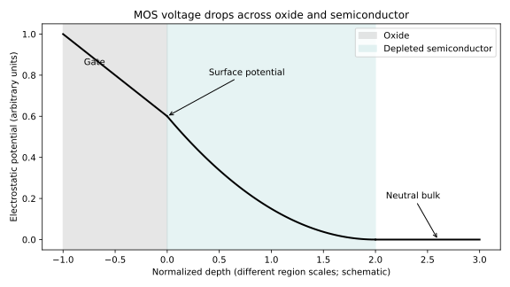
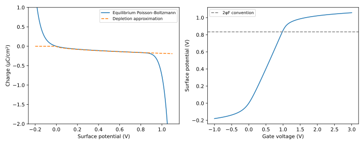

Chapter 1 · Foundations · 8–10 hours
Rebuilding the semiconductor model
What remains useful from Si/Ge physics when the gate and channel become unfamiliar materials?
A transistor's threshold voltage changes after a gate pulse. The change could arise from switched dipoles, trapped charge, altered channel occupation, or damage. Before calling it ferroelectric memory, we need a model that keeps those possibilities separate. This chapter rebuilds the silicon concepts that survive the transition and identifies where their assumptions must be tested.
Prerequisites: calculus and elementary electrostatics. Objectives: recover carrier statistics and transport, derive the MOS voltage budget, understand how interface charge shifts threshold, and recognize when a familiar formula has lost its physical justification. The MIT 6.012 notes, lectures 2–9 provide a conventional-semiconductor reference; the derivations here specify their assumptions explicitly.
1.1 Diagnose the rust before studying everything again
Try these without notes: explain why a filled valence band does not carry ordinary drift current; derive the equilibrium product of electron and hole densities; explain why diffusion can balance drift in a junction; and say where a gate voltage drops in depletion. If you can derive all four, read the numerical examples and proceed to materials. Otherwise work through the corresponding sections. The goal is a usable model, not recall of an old table of constants.
1.2 From bonding to bands
In diamond-structure silicon and germanium, each atom participates in a tetrahedral covalent network. Bringing many atoms together splits atomic levels into a large number of closely spaced states. Translational symmetry permits labeling one-electron states by crystal wavevector $\mathbf{k}$. An energy band $E_n(\mathbf{k})$ gives the energy of band index $n$ as a function of that wavevector. The band gap separates the top of the valence band from the bottom of the conduction band.
The band picture is an effective description of electrons moving in a periodic solid, not a claim that electrons cease interacting. In a nearly parabolic band minimum, write $E(\mathbf{k})\simeq E_c+\hbar^2 k^2/(2m^*)$, where $E_c$ is the conduction-band edge, $m^*$ is an effective mass, and $\hbar$ is Planck's constant divided by $2\pi$. Effective mass encodes local curvature. A flat band has small curvature and large mass; an anisotropic band requires a tensor.
Carrier velocity is proportional to the energy gradient in wavevector space. In a filled band, states at opposite wavevectors have opposite velocities and their contributions cancel. An almost filled valence band can instead be described by the missing occupations, called holes, which carry positive effective charge. This bookkeeping remains valuable in crystalline oxides, but an amorphous channel has no exact crystal-wavevector quantum number. A mobility extracted from its current is an effective transport parameter, not automatically a simple band-curvature measurement.
1.3 Occupation, doping, and the meaning of equilibrium
Let $E_F$ denote the equilibrium chemical potential and $T$ the absolute temperature. The probability that an electron state of energy $E$ is occupied is $f(E)=1/[1+\exp((E-E_F)/(k_BT))]$, with Boltzmann constant $k_B$. Multiplying the conduction-band density of states by $f$ and integrating gives the electron density $n$. In the nondegenerate limit, where occupation near the band edge is small, $f\simeq\exp[-(E-E_F)/(k_BT)]$. The energy integral can then be summarized by an effective density of states $N_c$:
$p$ is hole density, $N_v$ the valence-band effective density of states, and $E_v$ the valence-band edge. Use a consistent energy unit: joules with $k_B$ in J/K, or electronvolts with $k_B$ in eV/K.
Multiplying eliminates $E_F$, giving $np=N_cN_v\exp[-E_g/(k_BT)]=n_i^2$, where $E_g=E_c-E_v$ and $n_i$ is intrinsic carrier density. This mass-action relation assumes thermal equilibrium and the same nondegenerate statistics in both bands. Under illumination or injection, separate electron and hole quasi-Fermi levels generally destroy the simple equilibrium product.
A donor can release an electron and remain positively ionized; an acceptor can accept an electron and leave a mobile hole. If shallow dopants are fully ionized and the material is uniform, charge neutrality requires $n+N_A=p+N_D$, where $N_A$ and $N_D$ are acceptor and donor densities. For a strongly n-type nondegenerate sample, $n\simeq N_D-N_A$ and $p\simeq n_i^2/n$. Deep defect levels and low-temperature freeze-out require occupation equations rather than assuming complete ionization.
For a synthetic example, let $n_i=10^{10}$ cm⁻³ and $N_D-N_A=10^{16}$ cm⁻³. Then $p\simeq10^4$ cm⁻³. This arithmetic teaches compensation and minority-carrier sensitivity; the chosen $n_i$ is not a fresh measurement of silicon or any oxide. Six orders of magnitude in majority concentration become six orders in the opposite direction for the minority concentration at fixed $n_i$.
1.4 Drift, diffusion, and a junction's internal field
Define $q\gt0$ as elementary charge, $\mu_n$ as electron mobility, and $D_n$ as electron diffusion coefficient. In one dimension the conventional electron current density is $J_n=q n\mu_n E+qD_n\,dn/dx$. The drift term follows from force-driven motion with momentum relaxation. The diffusion term follows from particles flowing down their concentration gradient, with the negative electron charge reversing the conventional-current sign.
At thermal equilibrium $J_n=0$. In an electrostatic potential $\psi$, electron potential energy is $-q\psi$, so $n\propto\exp(q\psi/k_BT)$ and $dn/dx=(qn/k_BT)d\psi/dx$. Since $E=-d\psi/dx$, substitution gives $0=-qn\mu_n\psi'+qD_n(qn/k_BT)\psi'$. Thus $D_n/\mu_n=k_BT/q$, the Einstein relation in the nondegenerate, near-equilibrium setting. A hopping system or degenerate channel may require a generalized relation.
In a p–n junction, diffusion initially redistributes carriers, exposing ionized dopants. Their charge creates a field that opposes further diffusion. The depletion approximation neglects mobile carriers in the depleted region and solves Poisson's equation with fixed dopant charge. The resulting built-in potential is not an externally extractable battery: equilibrium contact potentials and the uniform chemical potential prevent that interpretation.

1.5 The gate voltage is a budget
A metal–oxide–semiconductor structure contains a conducting gate, an insulating film, and a semiconductor. Applied voltage changes electrostatic potential in the semiconductor and field across the insulator. Let $\psi_s$ be the semiconductor surface potential relative to its neutral bulk, $C_i$ the oxide capacitance per area, $Q_s$ the signed semiconductor charge per area, and $V_{\mathrm{FB}}$ the flat-band voltage. For a conventional one-dimensional MOS capacitor without additional internal charge sheets,
The minus sign matters. Positive gate bias over p-type silicon produces negative depletion and inversion charge, so $-Q_s/C_i$ is a positive oxide voltage drop. Flat-band voltage includes the gate–semiconductor work-function difference and fixed-charge effects. A work function is the energy required to remove an electron from the material to vacuum; matching band gaps does not match work functions or band offsets.
Accumulation increases the majority-carrier concentration near the surface. Depletion removes those carriers and exposes fixed dopants. Inversion creates a surface population dominated by the opposite carrier type. For uniform p-type material in the depletion approximation, integrating Poisson's equation yields $\psi_s=qN_AW_d^2/(2\epsilon_s)$ and $Q_d=-qN_AW_d$, where $W_d$ is depletion width and $\epsilon_s$ the semiconductor permittivity. Eliminating $W_d$ gives $Q_d=-\sqrt{2q\epsilon_sN_A\psi_s}$.
At a conventional strong-inversion threshold, $\psi_s\simeq2\phi_F$, with $\phi_F=(k_BT/q)\ln(N_A/n_i)$ for a p-type bulk. Threshold is therefore sensitive to both semiconductor depletion and oxide capacitance. An added positive interface charge $\Delta Q_t$ shifts the required gate voltage by approximately $-\Delta Q_t/C_i$, if other terms remain fixed. The same algebra can describe a memory shift from trapped charge; a shifted transfer curve by itself does not uniquely demonstrate switched ferroelectric polarization.
1.6 The thermal slope and its assumptions
In weak inversion, suppose current scales as $I_D\propto\exp(q\psi_s/k_BT)$. Define gate coupling $m=dV_G/d\psi_s$. Differentiating the MOS budget gives $m\simeq1+(C_d+C_{it})/C_i$, where $C_d$ is depletion capacitance and $C_{it}$ represents responding interface traps. Then the gate swing needed for one decade in current is
At 300 K, the calculated ideal $m=1$ value is 59.526 mV/decade. The familiar “60 mV” is not a general thermodynamic prohibition on all switches. It follows from thermal injection, the assumed current law, and ordinary positive electrostatic capacitances. Negative-capacitance proposals attempt to change gate coupling; tunneling devices change the injection physics. Whether a measured steep slope is reproducible, hysteresis-free, and useful requires tests beyond differentiating a curve.
1.7 A memory claim starts with an electrostatic inverse problem
Suppose two programming pulses leave a transistor with threshold voltages separated by 0.2 V. The useful engineering observation is that a subsequent read can distinguish two histories. The scientific question is harder: what changed inside the stack? A reversed polarization, a newly occupied trap, a shifted contact barrier, or a changed channel carrier density can all move a transfer curve. Before assigning a mechanism, build a baseline that predicts how charge becomes a measurable voltage. Our running device is a planar p-type semiconductor with a 3 nm SiO₂ gate dielectric at 300 K. It is a synthetic reference device, chosen to make familiar silicon physics explicit before introducing the less familiar oxide channels in Khan's research.
The model assumes a laterally uniform, semi-infinite semiconductor, equilibrium carrier populations, fully ionized shallow dopants, and negligible interface charge. The gate is large enough that fringing fields are ignored. None of these assumptions requires the semiconductor to be a memory. That is useful: a credible memory interpretation must first survive the corresponding non-memory electrostatics. For the standard background and sign conventions, compare MIT 6.012 lectures 2–7; the numerical experiment and inverse-problem discussion here are original teaching constructions.
Integrate Poisson's equation without throwing away the carriers
Let coordinate $x$ increase from the semiconductor surface into the bulk. Set bulk potential to zero and surface potential to $\psi_s$. Write $p_0$ and $n_0$ for bulk hole and electron densities in m⁻³, with $p_0n_0=n_i^2$. Bulk neutrality makes the fixed ionized-acceptor charge density $-q(p_0-n_0)$. This small distinction avoids forcing both $p_0=N_A$ and exact neutrality when minority carriers are retained. For our strongly p-type example, $p_0=10^{23}$ m⁻³ and $n_i=10^{16}$ m⁻³, so $n_0=10^9$ m⁻³ and $p_0$ is indistinguishable from the net acceptor density at displayed precision.
Define thermal voltage $V_T=k_BT/q$, dimensionless local potential $u=\psi/V_T$, and minority-to-majority ratio $r=n_0/p_0$. Equilibrium Boltzmann statistics gives $p=p_0e^{-u}$ and $n=n_0e^u$. The local volume charge is therefore $\rho=q[p_0(e^{-u}-1)-n_0(e^u-1)]$, in C/m³. Positive potential repels holes and attracts electrons; both changes make the semiconductor charge more negative. This sign check is more useful than memorizing a formula.
Poisson's equation is $d^2\psi/dx^2=-\rho/\epsilon_s$, where $\epsilon_s$ is semiconductor permittivity in F/m. Multiply it by $d\psi/dx$. The left side becomes the derivative of $(d\psi/dx)^2/2$. Integrate from the neutral bulk, where both potential and field vanish, to a point with potential $\psi$. If $E=-d\psi/dx$, the first integral is
The integrand variable $v$ is potential, not velocity. The expression in brackets, denoted $F(u)$ below, is nonnegative and vanishes at flat band. Gauss's law relates the total semiconductor charge per area to the surface field: $Q_s=-\epsilon_s E_s$. Choosing the sign consistent with positive potential producing negative charge gives
This is a first integral of the equilibrium Poisson–Boltzmann problem. It provides charge without solving for every spatial point. It is not an empirical transistor fit. Its authority comes from the assumptions used to write charge density and the boundary condition in the neutral bulk. A very thin fully depleted channel, a degenerate carrier gas, or a rapidly swept isolated MOS capacitor requires a different boundary-value problem. The expression cannot be transplanted unchanged into a nanometer-thick amorphous oxide channel merely because that device also has a gate.
Recover the approximations and identify their failure
Near flat band, expand the exponentials through second order. Linear terms cancel, leaving $F(u)\simeq(1+r)u^2/2$. Consequently, $Q_s\simeq-C_D\psi_s$, with $C_D=\sqrt{\epsilon_s q p_0(1+r)/V_T}$. Here $C_D$ is the small-signal semiconductor capacitance per area at flat band. Its reciprocal length scale is the inverse Debye screening length: $L_D=\epsilon_s/C_D$. The linear charge response is finite; a depletion-only square-root formula instead has an infinite derivative at zero potential. That divergence is a warning that the approximation was used outside its region.
For moderately positive potential, holes are depleted and inversion electrons are still negligible. Then $F(u)\simeq u-1$, and sufficiently far above $V_T$ the constant term can also be neglected. The charge reduces to $Q_s\simeq-\sqrt{2\epsilon_s q p_0\psi_s}$, the depletion result derived earlier. At stronger inversion, the term $re^u$ eventually dominates and the charge again changes exponentially. The same exact expression therefore exposes both boundaries of the depletion approximation. A numerical solver can converge perfectly while an approximate physical formula is wrong near either boundary.
The usual threshold convention $\psi_s=2\phi_F$, with $\phi_F=V_T\ln(p_0/n_i)$, has a precise interpretation. At that potential, $n_s=n_0e^{2\phi_F/V_T}=p_0$: the surface minority-carrier density equals the bulk majority-carrier density. It is a useful convention for inversion onset, not a phase transition. A constant-current threshold extracted from a measured transistor also depends on geometry, drain bias, transport, contacts, and the chosen current criterion. Comparing threshold numbers across papers without those conditions can manufacture an apparent materials effect.
1.8 Solve the gate budget and test its uniqueness
Substituting the exact charge into $V_G=V_{\rm FB}+\psi_s-Q_s/C_i$ produces a scalar nonlinear equation for $\psi_s$. Why is a root-finding algorithm legitimate? Define differential semiconductor capacitance $C_s=-dQ_s/d\psi_s$. In this equilibrium conventional MOS model it is positive. The derivative of the predicted gate voltage is $dV_G/d\psi_s=1+C_s/C_i\gt0$. Gate voltage is strictly increasing with surface potential, so there is at most one root in a bracket. A bracketing solver can establish existence by a sign change and find that root without relying on an arbitrary initial guess.
This monotonicity argument will fail in an interesting way once a ferroelectric constitutive relation is introduced. Several internal states may satisfy one terminal voltage, and the state selected can depend on history or stability. Applying a conventional root solver and accepting whichever state it finds would then discard the very memory being studied. The distinction between a unique electrostatic equilibrium and a history-dependent internal state is one of the foundations of the modeling chapter.
For the synthetic silicon example, take $\epsilon_s=11.7\epsilon_0$, dielectric relative permittivity 3.9, and $V_{\rm FB}=0$. The 3 nm dielectric has $C_i=0.0115104$ F/m². At 300 K, $\phi_F=0.416685$ V; the exact equilibrium model places the $2\phi_F$ threshold convention at gate voltage 0.977869 V. A 1 V gate produces $\psi_s=0.851660$ V. The remainder of the gate budget is across the oxide. These constants define a teaching device, not a reconstruction of a reported sample.

The flat-band semiconductor capacitance is 0.00801264 F/m². Putting it in series with the oxide gives gate capacitance $C_G=(C_i^{-1}+C_s^{-1})^{-1}$, approximately 0.00472 F/m² at flat band. This is the measured terminal derivative under the model's equilibrium assumptions. At high frequency, minority carriers may not respond rapidly enough to follow the same equilibrium inversion branch. An impedance measurement therefore probes both electrostatics and response times. A capacitance–voltage curve needs a frequency, sweep rate, temperature, and prior bias history before it can be used as a model target.
Trap position changes its leverage
A sheet charge at the semiconductor interface has the full oxide thickness over which to alter the voltage. Charge close to the metal gate has less leverage. Let $z$ run from the gate at zero to the semiconductor at dielectric thickness $t_i$. Add a fixed sheet charge $\sigma_t$ in C/m² at $z=a$, with $0\le a\le t_i$, while holding semiconductor charge and surface potential fixed. The electric field below the sheet is fixed by the unchanged semiconductor charge. Gauss's law makes the field above the sheet change by $-\sigma_t/\epsilon_i^{\rm abs}$, where $\epsilon_i^{\rm abs}=\epsilon_0\epsilon_i$. Integrating the changed field over the distance $a$ gives
At the semiconductor interface $a=t_i$, this becomes the familiar threshold-shift expression. At the metal surface $a=0$, ideal metal screening eliminates the voltage leverage. A distributed trapped-charge density requires integrating this position-dependent weight. Thus two films with the same total trapped charge need not have the same threshold shift. In a multilayer, each segment contributes according to its thickness and permittivity; using a single average dielectric constant can conceal the interface that matters.
For the 3 nm example, $10^{11}$ additional positive elementary charges per cm² is $1.60218\times10^{-4}$ C/m² and shifts threshold by −13.919 mV when placed at the semiconductor interface. The same charge halfway through the oxide gives half that shift. A 0.2 V shift could therefore require different charge inventories depending on location. A threshold shift alone does not locate that charge, and it does not establish whether the charge is bound polarization or trapped carriers.
1.9 Connect the electrostatic state to a read current
A capacitor has no lateral read current. A field-effect transistor adds source and drain contacts so that gate-controlled channel charge can move. For an ideal long-channel inversion device, let $W$ and $L$ be channel width and length, $\mu$ the low-field mobility, and $V(x)$ the channel potential measured from the source. Let $V_{\rm ov}=V_G-V_{\rm th}$ be gate overdrive. In the gradual-channel approximation, inversion sheet charge is approximately $Q_{\rm inv}(x)=-C_i[V_{\rm ov}-V(x)]$ until pinch-off.
Current continuity requires the same drain current through every channel cross section. Drift transport gives $I_D=\mu W[-Q_{\rm inv}(x)]dV/dx$. Integrate from source to drain, over potentials zero to $V_D$ and length zero to $L$. The result is $I_D=\mu C_i(W/L)[V_{\rm ov}V_D-V_D^2/2]$ for a positive drain bias below overdrive. The quadratic term represents the channel charge decreasing toward the drain. It is not an arbitrary curve-fitting correction. At small drain bias it is negligible, giving a resistance controlled by overdrive.
If two memory states differ only in threshold by $\Delta V_{\rm th}$, the low-bias current difference is approximately $|\Delta I_D|=\mu C_i(W/L)V_D|\Delta V_{\rm th}|$. This relation makes the upward link concrete: a voltage window becomes a current signal only through mobility, geometry, read bias, and gate coupling. A larger window can still produce a weak signal in a low-mobility or contact-limited channel. Increasing read drain bias helps the signal in this approximation but changes read power and potentially disturb. Chapter 5 will carry the signal into a sensing-time and error-probability calculation.
The long-channel derivation is intentionally conditional. In an amorphous oxide transistor, carrier transport can involve localized states; contacts can limit current; mobility can depend on charge density. A successful square-law fit does not prove band transport, just as a hysteresis fit does not prove ferroelectricity. The 2026 agentic TCAD calibration preprint is relevant precisely because multiple mechanisms can fit a transfer curve. Its reported tests at additional drain biases and channel lengths ask whether the fitted explanation predicts new operating conditions. They do not establish universal parameter uniqueness or commercial deployment.
1.10 A numerical experiment with independent checks
The new cumulative depth laboratory implements the exact charge relation, solves the gate equation, and generates the figure above. Inputs are densities in m⁻³, potentials in volts, temperature through thermal voltage, and capacitances in F/m². Outputs include charge, surface potential, threshold under the stated convention, a figure, and a machine-readable validation record. The code writes only its local results. It does not fit measurements or control equipment.
python projects/depth_lab.pyThree checks address different possible failures. First, direct numerical integration of the charge density is compared with the analytic Poisson first integral, checking signs and factors. Second, each computed surface potential is substituted back into the original gate budget. Third, a symmetric finite difference near flat band is compared with the independently derived Debye capacitance. The largest charge discrepancy in the baseline run is about $6.1\times10^{-18}$ C/m² and the gate residual is below $6\times10^{-13}$ V. These are implementation checks under the chosen physical model, not evidence that its assumptions describe a fabricated transistor.
A useful learner experiment changes oxide thickness from 3 to 6 nm while holding all semiconductor inputs fixed. Predict the direction before running: oxide capacitance halves, the depletion-related gate-voltage cost doubles at a fixed surface potential, and the voltage shift from a given interface charge doubles. Then change the minority-carrier supply assumption. Simply suppressing inversion in the charge formula would model neither thermal equilibrium nor a complete transient; a valid deep-depletion treatment must account for generation and the time history. The exercise separates changing a parameter from changing the governing physics.
The experiment deliberately bounds the dimensionless potential to avoid exponential overflow and rejects nonpositive material inputs. A failed root bracket is reported as a numerical-domain failure. It is not silently converted into a plausible-looking voltage. In a larger device solver, a converged residual and a physically justified branch are distinct requirements. That distinction will reappear when the ferroelectric model develops multiple stationary states.
1.11 Worked problems: mechanism, scale, and identifiability
1. Derive the depletion approximation and test its scale
Starting from $F(u)$, specify the inequalities that justify discarding its exponential terms. Explain why a large positive $u$ is not sufficient by itself.
Solution. Hole depletion needs $u\gg1$, so $e^{-u}$ is negligible. Neglecting inversion additionally needs $re^u\ll u$, which eventually fails as $u$ rises. In the overlapping interval, $F\simeq u-1\simeq u$. Substitution gives $Q_s=-\sqrt{2\epsilon_s q p_0\psi_s}$. For our $r=10^{-14}$, the exponential electron term becomes important near strong inversion, despite the holes remaining depleted. Depletion describes what happened to holes; it does not license ignoring a newly accumulated electron population. A useful comparison plots relative charge error against potential and excludes the zero-charge point when forming relative error.
2. Can one transfer curve separate mobility from charge coupling?
Suppose low-drain-bias current is fitted with unknown mobility and unknown effective gate capacitance. The geometry and threshold are known. Identify the ambiguity and propose an additional measurement.
Solution. The linear current law depends on their product $\mu C_i$. Multiplying mobility by a positive factor and dividing capacitance by the same factor leaves every predicted current unchanged. More points on the same ideal curve reduce noise but do not break this structural ambiguity. An independent capacitance measurement, with a justified frequency response and parasitic correction, can constrain $C_i$. Separate geometry scaling can test whether a contact resistance contaminates the inferred mobility. An additional observable is valuable only if its parameter dependence differs; repeating the same curve more precisely cannot identify two parameters that enter solely as one product.
3. Distinguish a memory window from a ferroelectric mechanism
Two states have a 0.2 V threshold separation. Give a quantitative charge-trapping alternative for the running device and design a discriminating experiment.
Solution. An interface-charge difference of magnitude $C_i(0.2)=0.00230209$ C/m², about $1.44\times10^{12}$ elementary charges per cm², has the same first-order electrostatic leverage. Charge halfway through the dielectric requires twice the magnitude. This is a countermodel, not proof that trapping caused the observation. Compare matched devices with a nonferroelectric dielectric, measure pulse-width and delay dependence, independently measure switching charge with a protocol that subtracts nonswitching current, and examine whether the current and charge observations can share one consistent state model. Each test eliminates some alternatives; no single hysteretic transfer sweep uniquely identifies the mechanism.
4. Does doubling capacitance always double current?
Hold gate voltage rather than overdrive fixed and change the dielectric. Explain the hidden condition in the linear-current scaling.
Solution. The formula proportional to $C_i$ assumes unchanged mobility, geometry, drain bias, and overdrive. Threshold itself contains the depletion-charge term divided by $C_i$, and interface chemistry can change flat-band voltage and mobility. At fixed gate voltage the overdrive can therefore change too. First solve the new gate budget, then compute the channel current under a transport model that remains justified. The tempting factor-of-two prediction is valid only under a controlled comparison holding the other factors fixed. This is the first instance of the course's central rule: identify the held-fixed quantities before propagating a materials improvement upward.
1.12 Companion numerical electrostatics
Run python -X utf8 projects/stack.py foundations. The project computes thermal voltage and capacitor voltage division, then holds polarization fixed while sweeping interfacial-layer thickness. Decision variable is interface thickness from 0.25 to 2 nm; the objective is to reduce unwanted depolarizing field, with the explicit unresolved constraint of leakage and breakdown. A smaller dielectric thickness helps electrostatics but is not automatically manufacturable. The project has no tunneling model, so it cannot select a complete process optimum.
Its central check is Kirchhoff's voltage sum at zero applied voltage. The field in the ferroelectric can remain nonzero because the interface layer carries the compensating drop. Charge continuity constrains the two fields; it does not set each to zero. Chapter 2 derives this result and explains why it can destabilize stored polarization.
1.13 Exercises and solutions
5. Threshold-shift sign
With $C_i=0.03$ F/m² and added positive charge $3\times10^{-3}$ C/m², find the approximate threshold shift.
Solution. $\Delta V_T=-\Delta Q_t/C_i=-0.1$ V. This result assumes the added charge is at the specified electrostatic interface, unchanged depletion, and unchanged work function. Moving the charge through a multilayer changes its electrostatic weighting.
6. Recovering the ideal swing
Calculate the swing at 300 K if $(C_d+C_{it})/C_i=0.5$.
Solution. $m=1.5$, so $S=1.5(59.526)=89.289$ mV/decade. Reducing interface traps improves gate coupling and can reduce swing without creating negative capacitance.
7. When does mass action fail?
A photoexcited semiconductor has both electron and hole densities above equilibrium. Must one reported density be wrong?
Solution. No. The derivation eliminated a single equilibrium $E_F$. Under injection, different quasi-Fermi levels produce $np=n_i^2\exp[(E_{Fn}-E_{Fp})/(k_BT)]$ in the nondegenerate approximation. The original hypothesis failed; the algebra did not.
You can now interpret a gate-voltage shift without prematurely assigning it to ferroelectricity. The next step is to add structural order, thin-film interfaces, and history-dependent defects to this electrostatic foundation.